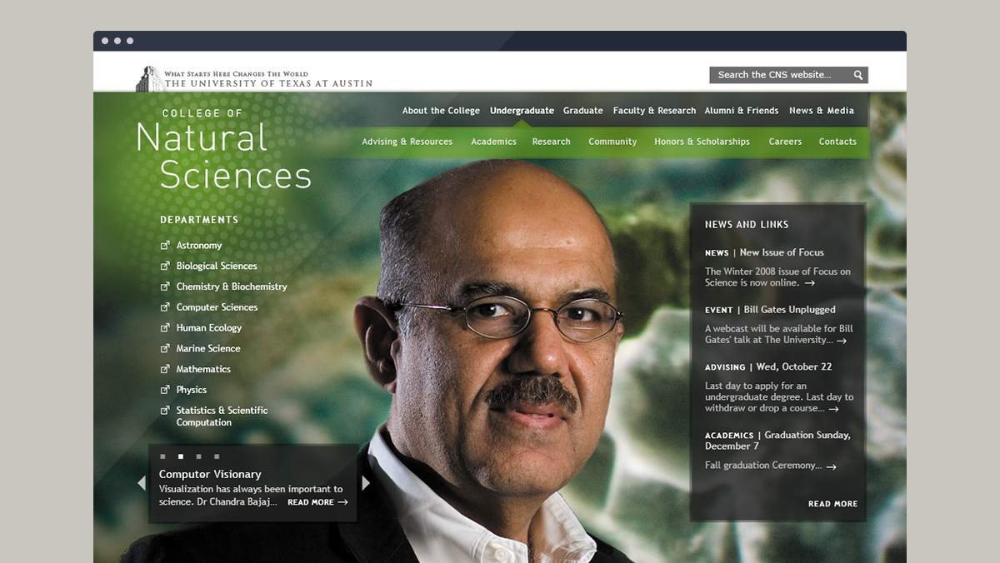
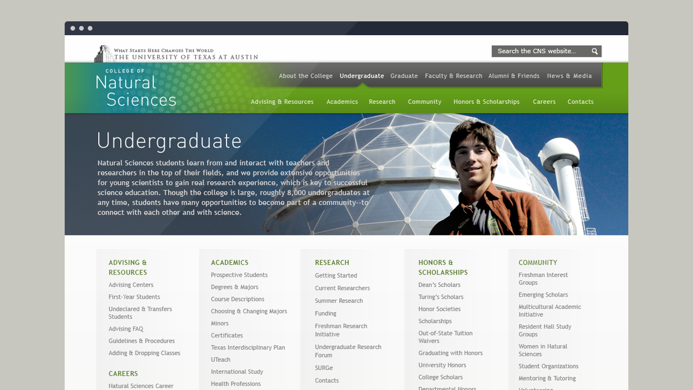
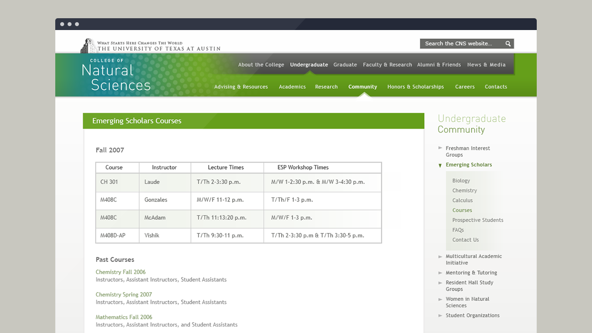
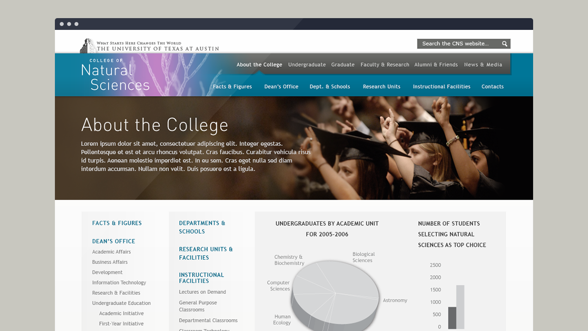
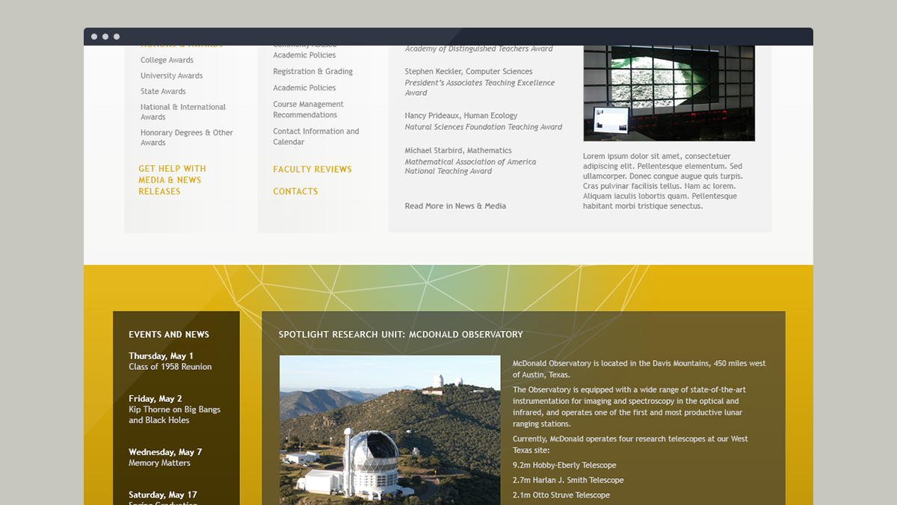
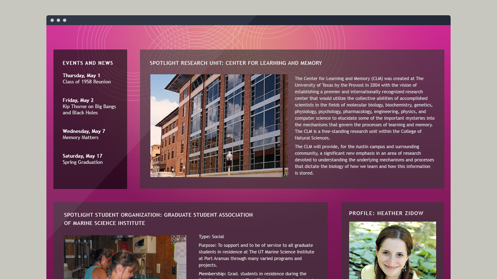

In 2010, the College of Natural Sciences was looking to do a complete redesign and overhaul of their website. The current site served students, faculty, alumni, and administrators but was difficult to navigate and facilitate the different needs of these user groups. The site also did not portray the lively program and research happening on campus.
My work began with interviewing these different user groups and reworking the site architecture. We decided that the site would need easy access to the Departments, but high-level navigation would reflect the users. Current events in the college would have equal prominence.
Despite being an academic institution, I wanted the site to feel fresh and to reflect the colorful personalities at the university. We incorporated large, imagery of the current students, faculty, and alumni, as well as shots of the facility and scientists in action.
Each landing had standardized, modular elements that could be swapped depending on context, and tertiary navigation was added to reflect the deep site architecture. Sections of the site also took on a different pattern and color palette.
Home Page
Secondary Landing
Tertiary Content pages
Section Variations
  